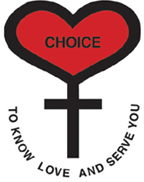

HEART
사랑할 줄 알고 사랑 받을 수 있는
젊은이를 상징

십자가
조건없는 사랑의 구체적인 표징인
그리스도를 상징
CHOICE
다른이들과 더불어 살 줄 알고 속하기로
선택하는 젊은이들의 능력을 상징
무엇을
선택하나요?
사랑하는 길을 찾는 젊은이들에게 직업 선택의 길을 가르쳐주는 것도 아니고, 배우자 선택 프로그램도 아니고, 가치관을 선택한다고 하면 맞는 말이 겠습니다.
가톨릭 사전에
정의 된 선택(CHOICE)
'선택'은 젊은이들이 대화를 통해 자아를 찾아나가는 프로그램이며, 소속감을 통해 자신과 세상을 변화시키려는 하나의 운동입니다. '선택'은 '서로 알고 사랑 하며 나누기 위하여 (To Know, Love and Serve You)'라는 슬로건 아래 젊은이들이 자신이 맺고 있는 인간 관계 안에서 자신이 누구인가를 발견하고, 그 관계에 충실함으로써 가정, 사회, 교회 공동체 그리고 하느님께 더욱 깊은 소속감을 갖도록 이끌어줍니다.
'To Know,
Love and Serve You'
각 선택 인이 사랑하고 봉사하는 삶의 현장에서 나타내야 할 개인의 사랑을 표현 하고 있습니다. 이 모토는 젊은이들로 하여금 가족관계나 친구, 교회 그리고 이 세상과의 관계에 더욱더 깊이 신뢰하고 사랑하고 싶은 열망을 갖도록 인도하고 있습니다